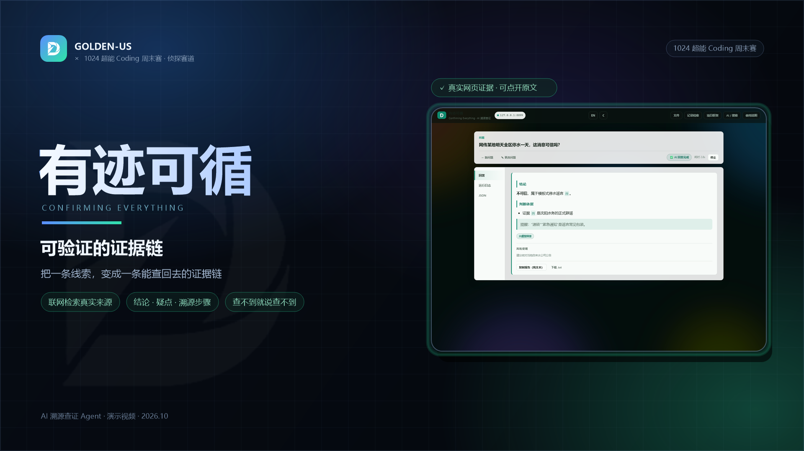
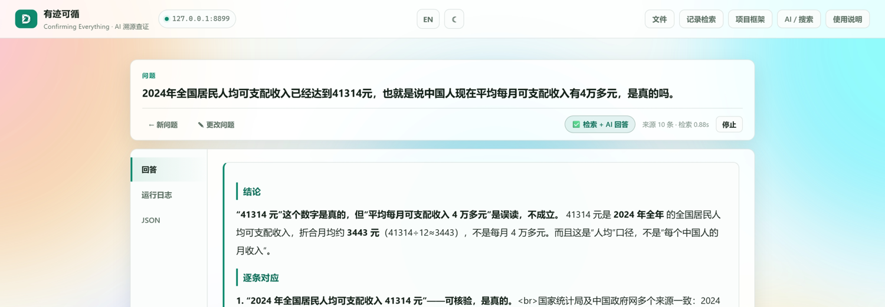
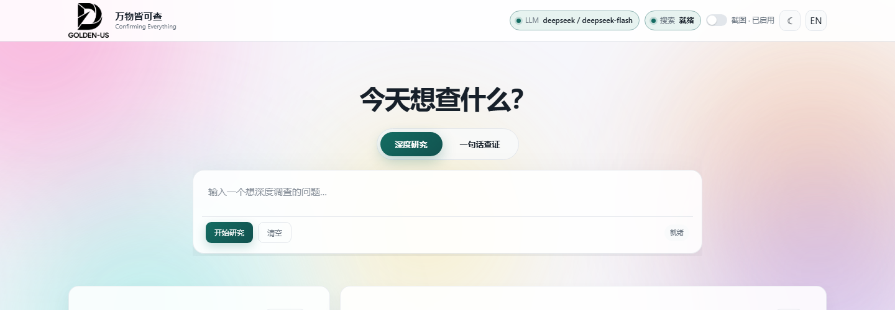
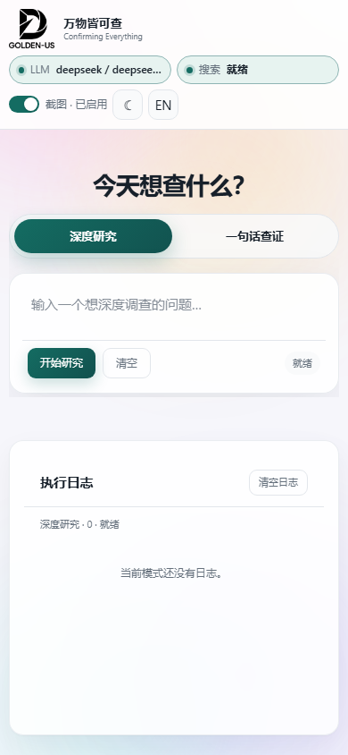

输入一个说法或问题，系统完成断言抽取、定向检索、来源分级与引用校验；结论、疑点、下一步都留在同一页。
把长句拆成可核验的独立断言；每个断言单独检索、单独判定，避免把整段话当成一个结论。
A–E 来源分级、5-gram 去重、quote 原文校验；没有来源支撑的句子明确写“无法确定”。
不拿旧数据冒充当前，不用标题补全事实；证据不足时只给非约束性参考意见，不给假结论。

需求拆分 → SearchPro 检索 → 全局去重 → 每需求 LLM 相关性重排 → A–E 分级 → 来源分册 → 研究综述。引用不再是装饰，而是可回看的路径。

1–3 个可检索需求；每个需求最多 5 条查询，主体与年份进入 query。
统一网关、缓存、预算、审计；Site 精确 host，0 结果自动回退。
top 30 相关性重排；A–E 域名与时效分级；全部 top sources 进入综述。
./.Search/Scripts/python.exe -m claimlab.api # http://127.0.0.1:8000 # 需要：Python 3.11+ · SearchPro key · DeepSeek key # 截图：本机 Chrome/Edge（SCREENSHOT_TIMEOUT_MS=15000）
